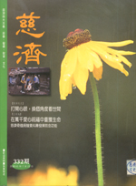

卑微的献礼
冯冯
《冯冯居士返国义演》之二
这一次，乘着回国举行慈善音乐晚会之便，
我于六月十七日晨，乘自强号火车赴花莲“朝圣”。
朝的圣是谁呢？自然是我崇拜钦佩已十多年，
而尚未有幸识荆的证严上人！大慈大悲的证严上人！
证严上人领导慈济人，筚路蓝缕，从一座小茅蓬做婴儿加工开始，发展到建立慈济医院、护专、医学院；把慈济的救助对象，从国内的贫病老弱，推广到国际的难民饥民，还救济大陆水灾灾区，成就与贡献，遍及世界不少地区与国家，可比美红十字会与德蕾莎修女。
上人于民国八十年荣获麦格塞塞总统纪念奖至今，仍是那样谦虚，我深知上人就算得了诺贝尔奖，也不会改变他的谦逊和蔼与慈悲救世的态度，仍然凡事亲身去服务众生。
对于这位今之观音菩萨化身，我说是去朝圣，应该不算用词失当吧？他是观音菩萨化身，我这样认定，而且相信很多人也会同意我的认定。我是根据他所实践的观音菩萨法门的大慈大悲、济度众生的伟大成就来认定的，并不是讲迷信那样的妄称某某人是佛菩萨的化身或报身。我认定证严上人所行的法，就是观音法门的精神，所以我认定他是观音菩萨的化身！
固然，观音菩萨必定还有很多化身非我所知，我所知道而且敢于肯定的，到目前为止，只有证严上人一位而已；而上人从不自称任何名号，只谦称出家人而已。这就像佛陀与诸大菩萨相似，他们从不自居名位名号。
去朝拜这么一位圣者，我不知应奉献一些什么才允称得宜，踌躇良久，总算是办出薄礼来了，而且，我自认还算得体；不算是献给上人私人的礼物，而是献给他的观音菩萨精神、献给慈济的！
这些薄礼，都各有一件小故事，让我一一来说明。
头一件礼物是“空瓶再生佛陀舍利”。
佛陀入灭后，金棺是置于双树林树上，待大迦叶赶回，金棺自然发火，三昧真火茶毗之后，获得舍利子八万四千余颗，分由八国国王请去供奉。以后流失不少，也有些流入民间或寺院供奉。经过两千五百多年，佛陀舍利出现者已不多，可谓绝无仅有，十分珍贵，以致斯里兰卡寺院呈献给香港及大陆的佛陀舍利子，成为罕见异宝，北京出土的佛牙舍利，也是同样珍贵，世人皆以为佛陀舍利仅此数颗，别无分店。
其实在尼泊尔、锡金、西藏等地带的一些寺院，仍有供奉流传下来的佛陀舍利，世人不知而已。估计今世可能仍然存在于某些地区寺院珍藏供奉的佛陀舍利有两三千颗，应该不算是夸张，问题是，他们不肯也不敢公开。
大约十年前，当时仍在世的高僧慧僧老法师，受尼泊尔僧王之托，把数十颗尼泊尔珍藏的佛陀舍利带到西方国家让有缘人士供奉，以免尼国万一有变动而遭兵毁灭。慧僧老法师来到加拿大，请罗午堂老居士把佛陀舍利分赠给世界佛教会（佛恩寺）与我，我获得了十颗，把它们供奉在天华公司董事长李云鹏老居士托罗伯伯带来的舍利塔内。
我天天拜佛、拜舍利，直到四年前，我托张正雄把这十颗舍利，连同班禅喇嘛访加莅临舍下时所赠我的，后藏日喀则喇嘛宫的法宝之一“佛骨璎珞”一○八颗，一同带到花莲，呈献给慈济功德会证严上人，恳予义卖，为慈济医院筹款。
把佛陀舍利与佛骨璎珞献出义卖，当然是我的“大不敬”，但是我一介贫士，无珠宝金玉，又无字画可供义卖；我心又想，佛陀舍利固然是与世尊敬的法宝之一，但是，若我个人珍藏它，于众生何益？假如拿出去义卖，筹款来建设医院救贫治病，岂不是更符合佛心与观音菩萨之心？要救了人命，才是真正的佛门法宝，否则，供奉再尊崇，也只不过徒具形式，并非佛意！
慈济人发起“护珞运动”，将捐款作为建设医院基金用途，我听到消息，非常的感恩！
自然，外界也有一些人写文章抨击我，说是膺品，不是真的佛陀舍利，这些评论家也未知来龙去脉，就妄自揣测，而且不知“见人行善，赞叹亦有功德”之佛训。我的答覆是：是真，是假？假如它能感动千千万万人发慈悲心去布施行善，救苦救难救病济孤，那它就是“真”的佛陀舍利！反之，就是假的！
佛陀舍利捐给慈济功德会，转眼已三、四年，舍利塔内是空瓶，已无舍利，拉上了黄幔，再也不开放了，可是我天天早晚仍在礼拜舍利空塔，在塔前许愿要做什么做什么，不以善小而不为之。
这么天天日夜拜了三、四年，有一天，心血来潮，拉开黄幔想来清扫一下舍利塔的灰尘，一开电灯照着，我可楞傻了！您猜看见了什么？
舍利荅玻璃瓶内的红色绒垫上，躺放着五颗大小不一的舍利子！
从哪儿来的呢？
外面人士根本不知我家供有舍利塔，我从不出示陌生人，就是熟人也很少知道佛龛上，我暗藏了舍利塔，根本不可能有人放舍利子进去，若有，首先必须开锁。（那锁匙，有时我自己也找不到！）
此次我来花莲朝圣，打算把这些空瓶再生的舍利，呈献给证严上人与慈济功德会。因为我觉得，这是由于把十颗捐献给慈济做善事，慈济的悲愿功德感应引起空瓶再生舍利，非干我事！若是我拜出来的，那么，起先那十颗舍利为什么不生，非要等到捐给慈济之后三年左右才再生？
这五颗再生舍利，不似原先的十颗那么圆净光辉，而且有些棱角，倒像是钻石结晶体，供人参观过几次之后，却又不见了一颗最小的，现在只余四颗，最大的一颗最近又生变化，看来有些似台湾的“并蒂荔枝”，会不会分裂为二，很难预测。
考查佛教文献，我发现以前也有人空瓶拜出舍利来，倒不是我独有。
看来那乳白色的舍利子，其化学成分，不外是钙质居多，但是空瓶在三重玻璃罩内，怎么在空气中形成舍利的呢？
我诚心将这四颗“空瓶舍利”呈献给证严上人与慈济，我不敢再言“义卖”以免渎圣。不过，假如有人肯发心再来一次长期的“护珠行动”为慈济医院医疗筹款，那才显得法宝是真的法宝，所谓钙什么的，都只是假借之
体而已。
第二件礼物是：“缅甸菩提玉石虚云手串”（以下简称虚云手串）。
两年前，香港来了一位素昧平生的居士，带来一件礼物，说是他父亲叫他交给我的，他找了我几十年才找到，交了东西后他就走了。
打开小包一看，是这串黄玉手串，一共二十一颗，像桂圆（龙眼）那么大小，每颗都刻成佛首，取楞严佛首之意。这二十一颗玉珠子是沉甸甸的，行家说是相当罕见的贵重玉器，无法以市场行情来估价，他说这是佛教宝物，收藏家可能不惜数万美元来买，但是不识货的人可能觉得一钱不值。
我珍藏此一手串，并且展开调查。根据送来的居士的父亲说，那是虚云老和尚在一九五○年代，最后一次从大陆赴港，那时把这手串交托给他，请一定要找到当年只有两、三岁，从人丛胯下爬进禅房的那个小男孩，说要托付给这个小孩。
虚云老和尚那时已一百一十五岁，后来回大陆去，遭云门之变，入灭于江西云居山，身后萧条，遗嘱把埋藏在云门后的黄金三百多斤捐出来重修广州光孝寺（六祖剃发出家处）。他左右的亲近传者，都知他有一串玉质手串不知去向，却不知他老人家老早带去香港交托了某居士（此人不肯露姓名），更不知已转托老居士寻找一个两三岁的顽童，老居士也不知那个当年被虚云抱在怀中的小顽皮，就是在下“猴儿”。
直到我的拙着“空虚的云”出版问世，老居士看到此书，又再看到另出的拙文提及，猴儿小时从大人们胯下爬进去要长胡子公公抱抱，他说：“将来的事交给你了。”─当时猴儿也听不懂，隔了几十年，才悟出来虚老要我写“空虚的云”。
老居士认出了在下正是当年的小顽皮，所以叫他的儿子又转给孙子把手串送上门来了。此位老居士，与冯伯伯（冯公夏）认识，所以孙子来是先去找冯伯伯才找来的。
您说故事曲折？还有下文哪！
虚老大约在一百年前（正确时间待考），曾去泰国弘法，在泰京龙泉寺讲经，入定九月，轰动南洋，泰皇拉玛九世与僧王亲自来礼拜虚老，当时虚老未出定，后来被皇帝迎入皇宫中说法，皇族全来皈依，各有供养礼物。虚老不受金银珠宝，唯独受了这串泰皇所赐，由僧王奉上的“缅玉手串”。而此一手串的来历，则是几百年前，缅甸内战时，缅王奔往泰国求泰皇庇护之时，对泰皇所献的名贵礼物之一，传到拉玛九世陛下，送给了虚老。
必定又有人说我胡址，我也提不出什反驳证据，谁爱不信就别信吧，我知我努力查证的事实。
那么，我把虚云手串据为私有，有什么意义？
我决定此次朝圣之际，同时呈献此一手串给证严上人与慈济。我是希望义卖到五千万元台币，不管是私人或团体义购，或是来一个“保串运动”，各人尽力随缘随愿捐献，能凑笔钱给慈济医学院及大学做教育基金，那就不枉虚老辗转托付某居士祖孙三代多年寻找我的一番苦心了（给慈济医院也可以，随慈济支配）。
第三件小礼物，是一包“千年沉香”
这是南洋出产，有人送来给我的，我自己舍不得用，此次带来呈献给证严上人与慈济，作为供奉佛陀舍利之用（此香香味很强，不宜一次多用，只可少许，不可不知），慈济若把它义卖，我也不反对。
其它呈献的琐琐碎碎之物，不值一提的。
捐完以上这些，我可是一无所有了，不太可能再有宝物捐出了。不过，谁知道？也许将来又会有人送来呢！我也会再捐献的。

原载《慈济》第332期：1994年7月25日
http://taipei.tzuchi.org.tw/monthly/332/332c11-3.htm